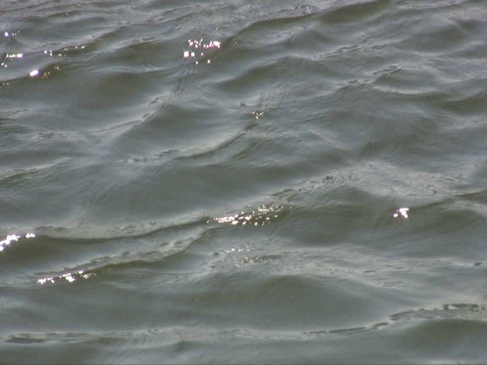

WHAT THE WATER REFRACTED

2024 | Super 8 and miniHDV Tape | silent | 39'
preview here
“Water is the first thing in my imagination… All beginning in water, all ending in water.” - Dionne Brand, A Map to the Door of No Return
The film images the ultimate shapeshifters: bodies of water. Oceans and rivers are displayed on three different film stocks spliced together with droning HDV tape. Water breaks and separates. When refracted we come back together again.